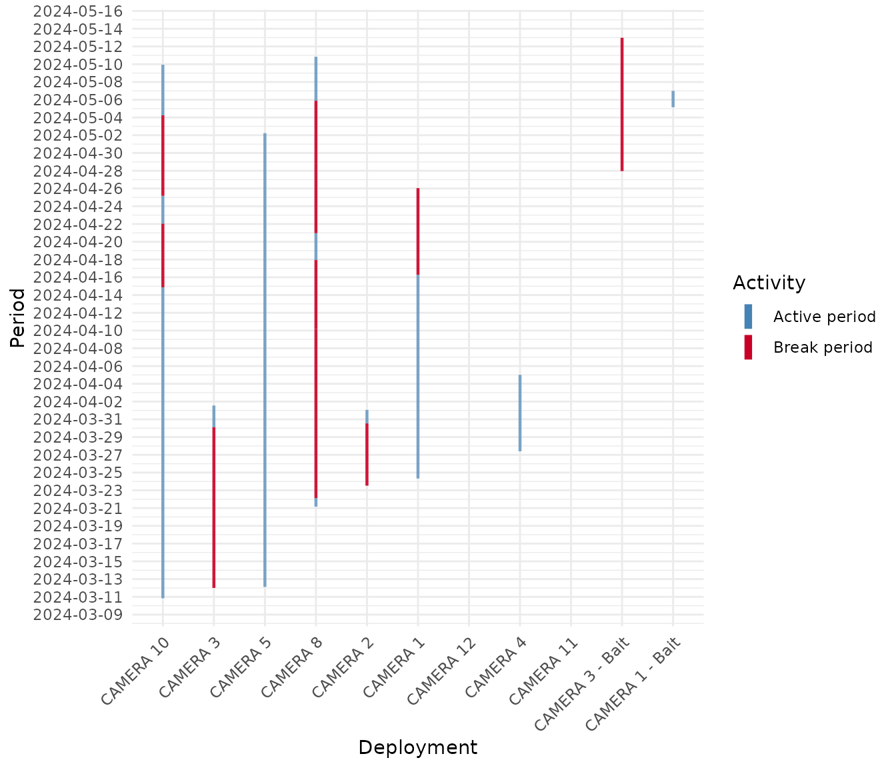

Camera Trap Data Processing
Source:vignettes/articles/camtrap_data_processing.Rmd
camtrap_data_processing.RmdWhy preparation comes first
A camera trap does not hand you a tidy table. It hands you a long
stream of images, and every image becomes a row: the same animal
standing in front of the lens for a minute can leave a dozen near
identical records. Before any activity analysis, diversity index, or
density model, that raw stream has to be turned into something the
method can trust. This article walks through a short preparation
workflow with ct, from a first look at the records to a
clean site by species table ready for analysis.
We use the bundled penessoulou dataset, from the
Penessoulou Classified Forest in Benin. It holds one row per recorded
image.
library(ct)
library(dplyr)
data(penessoulou)
dim(penessoulou)
#> [1] 4724 12
penessoulou %>%
select(project, camera, species, number, datetimes) %>%
head()
#> # A tibble: 6 × 5
#> project camera species number datetimes
#> <chr> <chr> <chr> <int> <chr>
#> 1 First 1G1 Tragelaphus scriptus 1 2024-06-07 09:44:44
#> 2 First 1G1 Tragelaphus scriptus 1 2024-06-07 09:44:46
#> 3 First 1G1 Tragelaphus scriptus 1 2024-06-07 09:44:47
#> 4 First 1G1 Canis adustus 1 2024-05-28 05:03:52
#> 5 First 1G1 Canis adustus 1 2024-05-28 05:03:53
#> 6 First 1G1 Canis adustus 1 2024-05-28 05:03:54Each row carries the survey phase (project), the camera
that took the picture (camera), the identified
species, how many individuals were counted
(number), and the capture time as a
"YYYY-MM-DD HH:MM:SS" string (datetimes),
along with the camera coordinates. This dataset is direct output of Declas, a species
detection and classification software designed to handle efficiently
camera trap data.
A first look at the data
Before touching anything, it helps to know what you are holding.
ct_describe_df() summarises whichever columns you name,
giving frequencies and proportions for categorical variables and the
usual descriptive statistics for numeric ones.
ct_describe_df(penessoulou, species, number)
#> # A tibble: 19 × 9
#> Variable species N Min Max Median Mean `CI Left` `CI Right`
#> <chr> <chr> <int> <dbl> <dbl> <dbl> <dbl> <dbl> <dbl>
#> 1 number Atilax paludino… 37 0 2 1 1.16 0.978 1.35
#> 2 number Canis adustus 223 0 2 1 0.969 0.937 1.00
#> 3 number Cephalophus gri… 187 0 2 1 1.03 0.987 1.08
#> 4 number Cephalophus ruf… 24 0 1 1 0.792 0.616 0.967
#> 5 number Cercopithecus a… 427 0 5 1 1.14 1.07 1.21
#> 6 number Chlorocebus aet… 4 1 1 1 1 1 1
#> 7 number Civettictis civ… 36 0 1 1 0.75 0.601 0.899
#> 8 number Cricetomys gamb… 9 0 1 1 0.667 0.282 1.05
#> 9 number Erythrocebus pa… 1590 0 15 1 1.81 1.71 1.90
#> 10 number Genetta genetta 26 0 1 1 0.885 0.753 1.02
#> 11 number Lepus crawshayi 6 1 1 1 1 1 1
#> 12 number Manis gigantea 3 1 1 1 1 1 1
#> 13 number Mellivora capen… 3 1 1 1 1 1 1
#> 14 number Sylvicapra grim… 9 1 1 1 1 1 1
#> 15 number Syncerus caffer 1145 0 10 1 1.65 1.58 1.72
#> 16 number Thryonomys swin… 16 0 2 1 0.938 0.632 1.24
#> 17 number Tragelaphus ruf… 24 0 2 1 1.33 1.09 1.57
#> 18 number Tragelaphus scr… 796 0 2 1 1.04 1.02 1.06
#> 19 number Xerus erythropus 159 0 3 1 0.730 0.620 0.839By default ct_describe_df() summarises the numeric
column within each level of the categorical one. Here
number is the count of individuals visible on an image, so
this single call lists every recorded species, how many images hold it
(N), and how many individuals typically appear per image
(the Min, Max, Median and
Mean of number). You can also pass your own
function, for example the sum, to add the sum number of individuals per
species. If you would rather see plain frequency tables and one overall
numeric summary, pass by_group = FALSE.
Keeping only independent detections
Two photographs of the same species at the same camera taken seconds
apart are not two pieces of evidence. They are one event seen twice.
Counting them separately inflates activity and abundance and breaks the
independence that most methods assume. ct_independence()
collapses these bursts: it keeps a detection only when enough time has
passed since the previous record of that species at that camera. Here we
use a 30 min window (1800 seconds), applied separately within each
species and each camera.
independent <- penessoulou %>%
ct_independence(
datetime = datetimes,
format = "%Y-%m-%d %H:%M:%S",
species_column = "species",
site_column = "camera",
threshold = 1800
)
nrow(penessoulou)
#> [1] 4724
nrow(independent)
#> [1] 640The stream of images collapses to a much smaller set of independent events. The threshold is a choice, not a constant: thirty minutes is common (e.g. Ahmad et al., 2024), but a study on a fast moving species or a busy trail might use a shorter or longer window. The point is to make that choice deliberately and to write it down.
Checking how the cameras ran
Independent or not, a detection is only meaningful if the camera was
actually working. A camera that stops for two weeks tells a very
different story from one that ran without a break, yet both can look
similar in a raw table. ct_plot_camtrap_activity() draws
each camera’s active window along time and marks any gap longer than a
threshold you set, so you can see the sampling effort at a glance.
penessoulou %>%
filter(project == "Last") %>%
ct_plot_camtrap_activity(
deployment_column = camera,
datetime_column = datetimes,
threshold = 7,
time_unit = "days",
ybreak = "2 days"
)
Each bar is the span between a camera’s first and last record for this survey phase. Gaps beyond the threshold, had there been any, would appear as red segments. A picture like this is a quick data quality check: it exposes cameras that failed early, started late, or went silent in the middle of the survey, before those problems quietly bias an estimate.
Reading the gaps as a table
The plot is good for spotting trouble at a glance, but sometimes you
need the exact figures. ct_find_break() returns every
interruption in a datetime series as a table of start,
end and duration, so you can say precisely
when a camera fell silent and for how long. Run it one camera at a time,
since a gap only means something within a single device.
penessoulou %>%
filter(project == "Last", camera == "CAMERA 5") %>%
ct_find_break(
datetime_column = datetimes,
threshold = 2,
time_unit = "days"
)
#> # A tibble: 11 × 3
#> start end duration
#> <dttm> <dttm> <dbl>
#> 1 2024-03-12 04:16:33 2024-03-16 03:14:26 3.96
#> 2 2024-03-17 22:11:39 2024-03-20 02:47:36 2.19
#> 3 2024-03-22 14:51:10 2024-03-25 13:38:37 2.95
#> 4 2024-03-25 13:50:20 2024-03-28 17:06:38 3.14
#> 5 2024-04-02 04:51:22 2024-04-04 13:50:01 2.37
#> 6 2024-04-04 17:32:12 2024-04-10 14:29:12 5.87
#> 7 2024-04-10 14:29:13 2024-04-14 23:11:33 4.36
#> 8 2024-04-14 23:27:33 2024-04-17 14:13:33 2.62
#> 9 2024-04-18 17:15:04 2024-04-22 05:50:19 3.52
#> 10 2024-04-22 05:50:20 2024-04-28 21:22:36 6.65
#> 11 2024-04-30 03:46:40 2024-05-02 05:05:54 2.06Every stretch of more than two days without a picture is listed with
its length in days. Lower the threshold to surface short
interruptions, raise it to keep only the serious outages. This is the
same gap detection that draws the red segments in the plot above.
Building a site by species table
Many downstream tools, from diversity indices to ordination, expect a
community matrix: one row per site, one column per species, and an
abundance in each cell. ct_to_community() reshapes the
independent detections into exactly that. Because number
counts the individuals on each image, summing it per camera and species
gives the total individuals recorded, which we use as the abundance.
Empty combinations are filled with zero.
community <- independent %>%
ct_to_community(
site_column = camera,
species_column = species,
size_column = number,
values_fill = 0
)
dim(community)
#> [1] 39 20
community[1:5, 1:5]
#> # A tibble: 5 × 5
#> camera `Canis adustus` `Cephalophus grimmia` `Syncerus caffer`
#> <chr> <int> <int> <int>
#> 1 10G1 1 1 4
#> 2 10G2 0 0 0
#> 3 11G1 5 12 0
#> 4 11G3 0 0 0
#> 5 12G1 0 0 0
#> # ℹ 1 more variable: `Tragelaphus scriptus` <int>Now every camera is a row and every species a column, with a real zero wherever a species was never detected.
Putting sites on a comparable scale
Raw counts are hard to compare across cameras, because a camera on a
busy trail records more of everything than a camera in a quiet corner.
Standardisation removes that effect so differences reflect community
composition rather than raw activity. ct_standardize()
offers many methods; the Hellinger transformation is one of choices
before distance based analyses. It works on a numeric matrix, so we move
the camera names into row names first.
mat <- community %>%
tibble::column_to_rownames("camera")
community_hel <- ct_standardize(mat, method = "hellinger")
round(as.matrix(community_hel)[1:5, 1:5], 3)
#> Canis adustus Cephalophus grimmia Syncerus caffer Tragelaphus scriptus
#> [1,] 0.408 0.408 0.816 0.000
#> [2,] 0.000 0.000 0.000 1.000
#> [3,] 0.286 0.444 0.000 0.384
#> [4,] 0.000 0.000 0.000 1.000
#> [5,] 0.000 0.000 0.000 0.775
#> Cercopithecus aethiops
#> [1,] 0.000
#> [2,] 0.000
#> [3,] 0.444
#> [4,] 0.000
#> [5,] 0.000The values are now on a common footing, ready for a dissimilarity matrix, a clustering, or an ordination without one crowded camera dominating the result.
Detection histories for occupancy
Occupancy models ask a different question: not how many animals, but
whether a species was seen at all in each sampling window.
ct_to_occupancy() reshapes the detections into that format,
splitting the study period into fixed windows and recording presence (1)
or absence (0) for every site and species. We take the day straight from
the parsed datetime column that
ct_independence() added, which is cleaner than the raw
dates field, then group the survey into monthly
windows.
occupancy <- independent %>%
mutate(day = as.Date(datetime)) %>%
ct_to_occupancy(
date_column = day,
site_column = camera,
species_column = species,
size_column = number,
by_day = 30,
presence_absence = TRUE
)
occupancy[1:5, 1:5]
#> # A tibble: 5 × 5
#> camera species 2024-03-02 to 2024-03-3…¹ 2024-04-01 to 2024-0…²
#> <chr> <chr> <dbl> <dbl>
#> 1 10G1 Atilax paludinosus 0 0
#> 2 10G1 Canis adustus 0 0
#> 3 10G1 Cephalophus grimmia 0 0
#> 4 10G1 Cephalophus rufilatus 0 0
#> 5 10G1 Cercopithecus aethiops 0 0
#> # ℹ abbreviated names: ¹`2024-03-02 to 2024-03-31`, ²`2024-04-01 to 2024-04-30`
#> # ℹ 1 more variable: `2024-05-01 to 2024-05-30` <dbl>Each row is a site and species, each window column holds a 1 or a 0,
and this is exactly the detection history an occupancy model expects.
Set presence_absence = FALSE to keep the raw counts
instead.
When the clock is wrong
Cameras drift. A unit set with the wrong date, or one whose battery
reset the clock, stamps every image with a time that never happened, and
that quietly poisons independence filtering, activity patterns and
effort. ct_correct_datetime() repairs this from a small
correction table that says, for each camera, whether it was running fast
or slow and what the true time was at a reference moment.
# One row per camera to fix: the direction (+ slow, - fast) and a reference
# timestamp showing the correct time.
corrector <- data.frame(
camera = c("CAMERA 1", "CAMERA 2"),
sign = c("+", "-"),
datetimes = c("2025-03-14 8:17:00", "2024-11-14 10:02:03")
)
penessoulou %>%
filter(project == "Last") %>%
ct_correct_datetime(
datetime = datetimes,
deployment = camera,
corrector = corrector
) %>%
select(camera, datetimes, corrected_datetime, time_offset_seconds) %>%
slice_head(n = 5)
#> # A tibble: 5 × 4
#> camera datetimes corrected_datetime time_offset_seconds
#> <chr> <chr> <dttm> <dbl>
#> 1 CAMERA 1 2024-03-24 8:03:07 2025-03-14 08:17:00 30672833
#> 2 CAMERA 1 2024-03-24 8:03:07 2025-03-14 08:17:00 30672833
#> 3 CAMERA 1 2024-03-24 8:03:08 2025-03-14 08:17:01 30672833
#> 4 CAMERA 1 2024-03-24 20:19:35 2025-03-14 20:33:28 30672833
#> 5 CAMERA 1 2024-03-24 20:19:35 2025-03-14 20:33:28 30672833The function adds a corrected_datetime column, along
with the offset it applied, while leaving the original untouched, so you
can inspect the shift before trusting it. In a real workflow this comes
first, and the corrected column feeds every step above.
Effort and trap rate
Counts mean little without knowing how long each camera watched.
Effort is the number of camera days behind the detections, and it is the
denominator for trap rate, occupancy and most density models.
penessoulou carries no deployment table, so here we switch
to the bundled Camtrap DP example (ctdp), which records
when each camera was switched on and off.
data("ctdp")
deployments <- ctdp$data$deployments
ct_get_effort(
deployment_data = deployments,
deployment_column = deploymentID,
start_column = start,
end_column = end
) %>%
head()
#> # A tibble: 4 × 3
#> deploymentID effort effort_unit
#> <chr> <dbl> <chr>
#> 1 0d620d0e-5da8-42e6-bcf2-56c11fb3d08e 10.0 days
#> 2 6c920a31-cf07-496f-aa4f-846a428f450a 6.76 days
#> 3 c95a566f-e75e-4e7b-a905-0479c8770da3 4.55 days
#> 4 d6d42e25-be43-4820-909d-708e42219a86 12.6 daysct_get_effort() returns the active duration of each
deployment. ct_traprate_data() goes a step further, joining
those efforts to the detections so every camera carries both a count
(n) and its effort, the pair that
ct_traprate_estimate() needs.
observations <- ctdp$data$observations %>%
filter(scientificName == "Vulpes vulpes")
ct_traprate_data(
observation_data = observations,
deployment_data = deployments,
use_deployment = TRUE,
deployment_column = deploymentID,
datetime_column = timestamp,
start_column = start,
end_column = end
) %>%
head()
#> # A tibble: 3 × 4
#> deploymentID n effort effort_unit
#> <chr> <int> <dbl> <chr>
#> 1 0d620d0e-5da8-42e6-bcf2-56c11fb3d08e 3 10.0 days
#> 2 c95a566f-e75e-4e7b-a905-0479c8770da3 2 4.55 days
#> 3 d6d42e25-be43-4820-909d-708e42219a86 10 12.6 daysTime of day on a circle
Activity analyses treat the time of day as an angle, because 23:59
and 00:01 are two minutes apart, not twenty-four hours.
ct_to_radian() maps a clock time onto that circle, where a
full day is 2 * pi.
with_radian <- independent %>%
ct_to_radian(times = times, format = "%H:%M:%S")
with_radian %>%
select(species, times, time_radian) %>%
head()
#> # A tibble: 6 × 3
#> species times time_radian
#> <chr> <chr> <dbl>
#> 1 Canis adustus 20:02:29 5.25
#> 2 Cephalophus grimmia 07:01:29 1.84
#> 3 Syncerus caffer 05:46:49 1.51
#> 4 Syncerus caffer 20:55:27 5.48
#> 5 Syncerus caffer 03:19:06 0.869
#> 6 Syncerus caffer 22:42:03 5.94The time_radian column is what activity tools such as
ct_fit_activity() and ct_overlap_estimates()
consume. The reverse trip is ct_to_time(), handy for
reading an angle back as a clock time:
ct_to_time(c(0, pi / 2, pi, 3 * pi / 2))
#> [1] "00:00:00" "06:00:00" "12:00:00" "18:00:00"Where this leads
In a handful of steps the raw image stream became something
dependable: explored, filtered to independent events, checked for
sampling gaps, and reshaped into a standardised community table. From
here the usual ct analyses follow naturally, for
example:
-
ct_fit_activity()andct_overlap_estimates()for daily activity and temporal overlap between species, fed by the radian times prepared above, -
ct_alpha_diversity()andct_dissimilarity()on the community table for diversity and between site comparison, -
ct_traprate_estimate()for trap rate, and the density estimators (ct_fit_ds(),ct_fit_rest(),ct_fit_tte(),ct_fit_ste()) once effort and detections are in place.
Good preparation is not glamorous, but it is where a trustworthy result is either won or lost. Spend the time here, and everything built on top of it stands on solid ground.